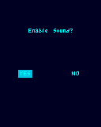
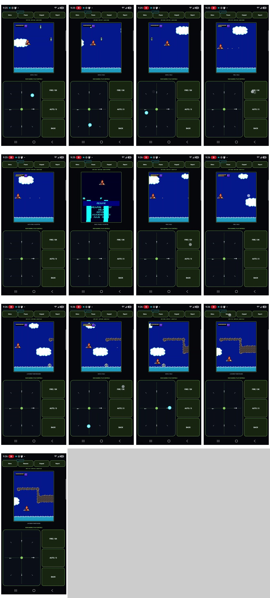

Rush Marine was my first BREW bridge. We’d been working on DoJa games, and suddenly there was another kind of phone game we could get running on Android. That was the exciting part for me. First, though, the game wanted to know whether to enable sound.
Beyond DoJa
Our earlier bridges had been teaching Android to host original DoJa bytecode. Rush Marine arrived as a BREW package with an ARM/Thumb module. This time, we would execute that original module in a Java interpreter and supply the handset services it asked for.B01B02
On the phone, we reached module loading, class creation and the app-start event. We followed the executable’s requests for handset information, persistent storage, resources, display objects and a timer. A zero-filled handset profile led to a negative allocation. Giving this edition its actual 128×160 dimensions let it continue.B03
A real callback then ran more than 36,000 original instructions, returned and scheduled the next callback. The game was beginning to drive its own small loop. The bitmap objects still needed pixels.B03
Enable Sound?
Version 0.0.3 gave those compatible bitmaps real pixel arrays and implemented the display calls the game was repeatedly making. Six updates and 432 rectangle draws produced a coherent little screen: Enable Sound? It was the original timer code asking the question.B04

A very small question from a new platform. This is the retained host framebuffer, produced by the original game code; it is not a phone screenshot.
B13The later live session could keep the timer running between touches and reach the menu and story. On Android, though, the resource images had dimensions without pixels. A desktop path could look encouraging while the phone kept losing the sprites.B05
Twelve bytes between the desktop and the phone
The BAR image resources were not bare PNG files. Each began with a 12-byte resource prefix containing image/png; the actual PNG signature started afterward. Desktop ImageIO tolerated those extra bytes. Android’s BitmapFactory did not. The runtime could know an image’s size and still have nothing useful to draw.B05
The fix located the real PNG signature and passed just that stream to Android. A deliberately strict host decoder was added so the desktop would reject the same prefixed input next time. The report action also learned to capture the active session before leaving the game view, instead of handing back an earlier clean probe that missed the live play.B05
The next physical result finally has a scrolling game: character, enemies, clouds, water, terrain and HUD. Its report records 19 successful image decodes and no decode failures. Its recording is still digitally silent. The pictures had their breakthrough first.B06
RIGHT did not mean right
The original HELP text was straightforward: numeric movement, dedicated diagonal keys, Fire on OK/5, Auto-Fire on 0 and Pause on Back. Translating that into a comfortable touch surface was less straightforward than copying the names of BREW constants.B07B08
We first trusted the directional aliases. A button labeled RIGHT didn’t move right, and continuous firing showed up where it wasn’t wanted. Then we tried inferring numeric keys from hexadecimal suffixes. The 0.0.9 notes keep both mistakes: neither approach gave us the right mapping.B08B09
The useful test reset the original game to the same active state for each candidate, held one key for 35 timer ticks and compared the sprite’s position against a no-input run. Now the mapping came from measured movement. One key moved up, another down, another fired, another toggled Auto-Fire. The labels finally had behavior behind them.B09
On the phone, the corrected cardinals worked. The retained 0.0.9 session records 616 key events, more than 11,000 display updates and successful decoding of all 18 requested PNG images. The game had become a useful place to test the next small difference.B10B11
The keypad still knew something the pad did not
Our custom pad tried to make a diagonal by holding two cardinal directions. The raw keypad’s 1, 3, 7 and 9 already worked. Rush Marine wanted those dedicated diagonal inputs, so we mapped each diagonal sector to its single original key.B11
There was sound by this point, with a strange overlap near startup that settled later in the level. The guest trace found two long MIDI sequences starting on separate media objects, with no Stop between them. Android allowed both players to keep going.B12
The 0.0.10 change let a new MIDI sequence replace an older MIDI player while keeping sound-effect objects independent. The original game still chose its resources and timing. The host had to stop treating the menu music and its successor as two unrelated things that could keep playing at the same time.B12

The retained phone review shows the actual scrolling game and its custom controls. Open the full sheet to inspect the 13 views.
Open the image for the full original view.
B13A new direction for the bridge work
“oh fuck. thats pretty neat”Wakka · remembering the first BREW bridge B01
That’s the milestone I remember: we could do something beyond DoJa, and it was running on my phone. Rush Marine also gave the older bridges something useful. The shared report requirements in DeadShot’s checkpoint name this game’s 0.0.9 phone report as their reference for describing a live session. A new platform had also improved how we kept track of the work.B01S20
About these records
The first-BREW reaction is current owner recollection, supported in scope by the preserved project README; it is not presented as a recovered October 3 quote. The early source records include a 0.0.5 filename with 0.0.6 headings. Version 0.0.9 has physical gameplay/control/audio evidence; the following diagonal and MIDI-arbitration repairs have their own remaining phone checks. The prompt image is a historical host capture, and the contact sheet is preserved physical-phone evidence without its source MP4. Later 0.1.2 importer acceptance and progress write-through are separate unfinished work. This chapter establishes the documented title-specific bridge, without claiming a general BREW runtime or a full playthrough.B14
The receipts
Selected report lines, investigation notes and recorded feedback behind the story. Each receipt keeps its source and context.
B01 / The first BREW bridge after DoJaOwner recollection
Source: Wakka / archive conversation / October 30, 2026
Current retrospective wording, supplied while assembling this history. The preserved README separately describes Rush Marine carrying the bridge work from DoJa into BREW. No contemporaneous first-reaction message has been substituted for this recollection.
“Rush marine. my first BREW game, it was pretty exciting knowing that we could do something other than DoJa games. that was kind of the moment i was like. oh fuck. thats pretty neat lolol”
B02 / Rush Marine carries the work from DoJa into BREWCheckpoint investigation notes
Source: 15-Rush_Marine_Bridge_v0.1.2_Preservation_PRIVATE.zip / README.md · selected lines 5–7, 27–37
Rush Marine Bridge is an independent Android compatibility bridge for running a user's own compatible copy of **Mega Man: Rush Marine**, the English **BREW 1.1.11 / CDM2030 128×160** release. It executes the original game's **ARM/Thumb module** through a Java interpreter and supplies the BREW services that this title uses. The original game drives the gameplay. [... selected excerpt ...] ## Why Rush Marine Bridge exists Dirge, DeadShot, and FFVII Snowboarding were about making old DoJa games practical to play on modern Android. Rush Marine carries that bridge work into BREW. The starting point was a preserved feature-phone package. Getting that package onto a modern phone meant making its original ARM instructions execute, supplying the phone services it expected, recovering its image and audio paths, and working out what its keypad events actually did. This was developed through repeated chat-based AI iterations and testing on my phone. The reports and recordings mattered: things that looked correct on the host still broke on Android, and several assumed control mappings turned out to be wrong in real gameplay. The working BREW runtime was then brought into the shared Wakkan/Omni bridge structure: a familiar front door, a larger game view, compact controls, and readable reports. This standalone public release adds local game-data import while retaining that baseline. The original game and its preservation are separate from my bridge work. My aim here is to make the preserved game usable on modern Android.
B03 / The original module needs a real handset profile and timerCheckpoint investigation notes
Source: 15-Rush_Marine_Bridge_v0.1.2_Preservation_PRIVATE.zip / baseline/original-docs/evidence/reverse/V0.0.2_HLE_FINDINGS.md · selected lines 3–15, 30–38
## Evidence origin The v0.0.1 physical S25 Ultra report proved the exact preserved module could load, construct class `0x01094C5E`, and accept `EVT_APP_START`. That report is retained under `evidence/device/`. The v0.0.2 host investigation then followed the original executable one requested service at a time rather than inserting a synthetic framebuffer success path. ## Dependency chain observed `module → applet → device info → persistent file → BAR resources/images → compatible bitmaps/display destinations → timer callback` ## Device information The game constructor reads the handset dimensions through the shell. Leaving this structure zeroed caused an invalid negative allocation downstream. Supplying the preserved build's actual 128×160 profile removes that failure and advances the original code naturally. [... selected excerpt ...] ## Display / bitmap path The game queries image dimensions, asks the display for its destination bitmap, creates compatible bitmaps matching loaded image dimensions, switches display destination, issues image draw operations, then restores/switches destinations. v0.0.2 models those interface objects and preserves this control flow. Current compatible bitmaps are structural HLE objects with width/height metadata. They do not yet contain/present authentic pixel backing. ## Timer path The startup sequence schedules a 10 ms callback at `0x001131D8` with the applet pointer as callback data. v0.0.2 invokes one real scheduled callback after START. It executes **36,874 original instructions**, returns normally, and schedules another 10 ms callback.
B04 / The original code draws Enable Sound?Checkpoint investigation notes
Source: 15-Rush_Marine_Bridge_v0.1.2_Preservation_PRIVATE.zip / baseline/original-docs/evidence/reverse/V0.0.3_HLE_FINDINGS.md · selected lines 3–13
The v0.0.2 S25 report exposed repeated display-interface calls during the first 10 ms timer callback. Rather than painting a Java replacement screen, v0.0.3 implements the behavior on the BREW host objects that the original executable is already calling. ## Pixel backing Compatible bitmaps now own ARGB pixel arrays. PNG resources loaded from `mmassaultbacksmall.bar` are decoded through a platform hook and `IImage.Draw` blits those pixels into the currently selected BREW bitmap destination. ## Display calls The repeatedly observed display `+0x14` call contains a pointer to four signed 16-bit values whose live values form sane in-bounds rectangles, followed by frame/fill color values and flags. v0.0.3 models that measured call as rectangle drawing. The timer-ending display `+0x1C` call is modeled as the frame update boundary. The resulting output is not synthetic: executing the original timer code produces 432 rectangles over six updates and a coherent 128×160 screen reading **Enable Sound?**.
B05 / Twelve prefix bytes hide the sprites on AndroidCheckpoint investigation notes
Source: 15-Rush_Marine_Bridge_v0.1.2_Preservation_PRIVATE.zip / baseline/original-docs/evidence/reverse/V0.0.5_HLE_FINDINGS.md · selected lines 3–11, 13–29
## Device evidence that drove this pass The returned v0.0.4 S25 Ultra report is a live Android 16/API 36 run. Its early BAR image path knows the original image dimensions but records `IImage.Draw ... pixels=no` for the resource-backed images. The preserved BAR resources are not raw PNG files: each of the four boot resources used in that path (`0x138E`, `0x1391`, `0x1394`, `0x13C0`) carries the same 12-byte resource prefix: `0c 00 69 6d 61 67 65 2f 70 6e 67 00` = length + `image/png\0` The real PNG signature begins at resource offset 12. Desktop `ImageIO` tolerated the prefix; Android `BitmapFactory.decodeByteArray` did not. That was the concrete reason the Android run showed rectangle/UI activity but not the real BAR sprite pixels. The returned v0.0.4 recording separately proves the persistent input session is functional: the on-screen runtime counters reach thousands of display updates and hundreds of BREW key events, while the original menu reacts to keypad input. The saved text report, however, contains a clean 297,426-step/0-key snapshot rather than that later live session. v0.0.6 therefore also makes live-report capture occur before leaving the play surface and renames the destructive diagnostics action to make a fresh runtime reset explicit. [... selected excerpt ...] ## v0.0.6 changes 1. **Android BAR PNG decode fix** - `BrewRuntime.makeImage` now locates the exact PNG signature inside the BAR resource and passes only the PNG stream to the platform decoder. - Image decode success/failure counters are included in the device report. - The host regression uses a deliberately strict decoder that rejects prefixed bytes, so this Android-specific failure mode cannot silently regress. 2. **Real held-key semantics** - Raw handset buttons now dispatch BREW `EVT_KEY_PRESS` on Android touch-down and `EVT_KEY_RELEASE` on touch-up/cancel. - The persistent 10 ms guest timer continues while a directional/action key is held. - This replaces the earlier atomic press+release click model while keeping `tapKey` as a desktop regression convenience. - Any held key is released when the activity pauses so the guest cannot be left with a stuck key. 3. **Report continuity** - The top-bar Report action snapshots the current persistent guest before opening Diagnostics. - Diagnostics labels a new-runtime action as `REBOOT RUNTIME (FRESH)` instead of an ambiguous generic probe. - Reports now include PNG decode counts and a compact count/last-location for unimplemented interface calls, which should make the next audio/display frontier easier to isolate.
B06 / The scrolling game is visible, and still silentCheckpoint investigation notes
Source: 15-Rush_Marine_Bridge_v0.1.2_Preservation_PRIVATE.zip / baseline/original-docs/evidence/reverse/V0.0.6_CONTROL_AUDIO_FINDINGS.md · selected lines 3–6
## Physical v0.0.5 result The returned S25 Ultra report remained live through 228,983,452 guest instructions, 5,296 display updates, 611,227 BitBlts, 19 successful BAR PNG decodes / 0 failures, and 228 live key events. This confirms the BAR pixel fix and persistent held-key event path on Android. The returned screen recording visibly shows the game in live scrolling gameplay with character, enemies, clouds, water, terrain, HUD and sprite assets present. Its AAC audio track is digital silence (0.0 sample amplitude across the captured track), so there is still no audible output in this build.
B07 / The original HELP text describes the handset controlsCheckpoint investigation notes
Source: 15-Rush_Marine_Bridge_v0.1.2_Preservation_PRIVATE.zip / baseline/original-docs/evidence/reverse/V0.0.6_CONTROL_AUDIO_FINDINGS.md · selected lines 8–20
## Recovered original controls The preserved BAR string/help resource states verbatim gameplay semantics: - Move Up: Dpad-Up, 2 - Move Left: Dpad-Left, 4 - Move Down: Dpad-Down, 8 - Move Right: Dpad-Right, 6 - Move diagonally with 1, 3, 7, 9 - Fire: OK/5 - Toggle Auto-Fire: 0 - Pause: BACK - Left softkey = OK; right softkey = BACK v0.0.6 therefore stops asking the player to mentally translate a raw handset keypad during gameplay. The game-specific screen defaults to a labeled 8-way movement pad plus FIRE / OK, AUTO-FIRE, and GAME PAUSE / BACK. The complete raw keypad remains one tap away under the top Keypad toggle and stays the canonical BREW reference surface.
B08 / A RIGHT label that does not move rightCheckpoint investigation notes
Source: 15-Rush_Marine_Bridge_v0.1.2_Preservation_PRIVATE.zip / baseline/original-docs/RELEASE_NOTES_v0.0.8.md · selected lines 3–18
## Why this build exists v0.0.7 proved the custom controls were mislabeled at the semantic layer. The host had assumed BREW D-pad alias values were trustworthy player-facing directions. The physical recording showed they were not: a button labeled RIGHT did not produce rightward movement, and gameplay could also enter an unwanted continuous-fire state. ## Changes - Deleted the old custom direction mapping instead of trying to patch its labels. - Player-facing directions now emit Rush Marine's documented numeric handset keys directly: **2 up, 4 left, 8 down, 6 right**. - Diagonals emit **1, 3, 7, 9** directly; they are no longer synthesized from two alias keys. - **FIRE** now emits original numeric **5**, not the assumed SELECT alias. - **AUTO** emits original numeric **0** only on an explicit player tap. No startup or movement path sends 0. - Kept the complete raw MGS-style handset keypad behind **Keypad** for reference/compatibility work. - Kept the fixed, non-scrolling gameplay layout and added release checks preventing scrolling from returning. - Removed the gameplay **Report** button. Diagnostics remain behind Bridgekeeper Tools; this control pass is validated by actual on-screen behavior, not by another report. - Preserved the returned v0.0.7 recordings and prior APK as evidence of the failed mapping so the lesson is not lost. - No new audio behavior is claimed; v0.0.7 media work is left intact while controls are corrected first.
B09 / Measure movement instead of guessing key namesCheckpoint investigation notes
Source: 15-Rush_Marine_Bridge_v0.1.2_Preservation_PRIVATE.zip / baseline/original-docs/evidence/reverse/V0.0.9_CONTROL_MAPPING.md · selected lines 3–17
The previous mapping inferred semantics from guessed BREW constant names and from hexadecimal suffixes. Both approaches were wrong. A deterministic desktop A/B probe boots the original `mmassault.mod` to the same active gameplay state for every candidate, holds one guest key for 35 original timer ticks, then compares the player sprite position to a no-input control run. Measured result: - E031: dx=0, dy=-11 -> UP - E032: dx=0, dy=+12 -> DOWN - E033: dx=-13, dy=0 -> LEFT - E034: dx=+12, dy=0 -> RIGHT - E035 produces a fired projectile -> SELECT/FIRE - E021 toggles continuous firing -> handset 0 / AUTO-FIRE - E030 opens the original pause menu -> BACK/CLEAR Original numeric aliases were also behaviorally confirmed: E022 up-left, E024 up-right, E028 down-left, E02A down-right. Disassembly around the held-key helper confirms 2/4/6/8 aliases E023/E025/E027/E029 for the four cardinals.
B10 / The 0.0.9 phone run retains the working sessionPhone runtime report
Source: 15-Rush_Marine_Bridge_v0.1.2_Preservation_PRIVATE.zip / baseline/device-evidence/RushMarine-Bridge-0.0.9-report-20261003-212702.txt · selected lines 1–20
Summary of one physical session. The audio starts/failures are backend events; listening observations are preserved separately in the later notes. Guest instruction counts are cumulative work, not an FPS metric.
RUSH MARINE BRIDGE v0.0.9 DEVICE RUN REPORT Captured: 2026-10-03 21:26:16 -0500 Device: samsung SM-S938U Android: 16 (API 36) ABIs: arm64-v8a Package: com.wakka.rushbridge Persistent session: LIVE Live key events: 616 (press 308 / release 308) Last key: 0xE031 pressRc=1 releaseRc=1 Guest steps: 454759078 Timer callbacks: 11121 / display updates: 11121 DrawRect / BitBlt: 153731 / 1285788 BAR data/images: 6 / 18 PNG pixel decodes: 18 success / 0 failed Guest IMedia: objects 3 / data 3 / play 4 / stop 1 Last guest audio resource: 0x2336 / serial 5 Android audio host: PAUSED (starts 4 / stops 0 / failures 0) Unhandled iface calls: 0 Framebuffer: PASS 128x160 nonblack=20323
B11 / Two cardinal holds are not the game’s diagonal inputCheckpoint investigation notes
Source: 15-Rush_Marine_Bridge_v0.1.2_Preservation_PRIVATE.zip / baseline/original-docs/evidence/reverse/V0.0.10_DIAGONAL_AUDIO_FINDINGS.md · selected lines 3–18
## Physical v0.0.9 result The returned S25 Ultra run confirms the v0.0.9 cardinal control correction worked physically. The remaining custom-control defect is limited to the four diagonal sectors: the raw keypad's 1/3/7/9 diagonal keys work, while the bespoke pad currently synthesizes two cardinal keys and the game does not treat that combination as its diagonal input. The v0.0.9 device report also shows a healthy live runtime with 616 key events, 454,759,078 guest instructions, 11,121 display updates, 18/18 PNG decodes, zero unhandled interface calls, and an active guest/Android audio bridge. ## Diagonal correction A deterministic guest A/B run proves the dedicated raw keypad diagonal codes directly move Rush diagonally: - `0xE022` / keypad `1` = up-left (`dx=-13`, `dy=-11`) - `0xE024` / keypad `3` = up-right (`dx=+12`, `dy=-11`) - `0xE028` / keypad `7` = down-left (`dx=-13`, `dy=+12`) - `0xE02A` / keypad `9` = down-right (`dx=+12`, `dy=+12`) v0.0.10 therefore maps each bespoke diagonal sector to that one dedicated guest key. It no longer synthesizes two simultaneous cardinal holds.
B12 / Two long MIDI streams overlap before the first levelCheckpoint investigation notes
Source: 15-Rush_Marine_Bridge_v0.1.2_Preservation_PRIVATE.zip / baseline/original-docs/evidence/reverse/V0.0.10_DIAGONAL_AUDIO_FINDINGS.md · selected lines 20–37
## Startup audio overlap The user's physical observation is that audio sounds strange just after the initial load/startup transition but sounds normal later in the level. The guest-side timeline reproduces a concrete overlap risk: 1. The sound-enabled title/menu path plays BAR resource `0x232A` on one IMedia object. 2. Selecting START plays BAR resource `0x2335` on a second IMedia object. 3. Both payloads are Standard MIDI. 4. No guest Stop occurs between those two Play requests. The exact preserved MIDI lengths are: - `0x232A`: 51.1725 seconds - `0x2335`: 35.0193 seconds - later level music `0x2336`: 66.0 seconds Android MediaPlayer permits the first two MIDI instances to coexist, which can create the startup overlap the physical run describes. v0.0.10 changes only host arbitration: starting a new Standard MIDI stream preempts any older Standard MIDI player, while QCP/SFX objects remain independent and may still overlap. No guest IMedia ABI, game bytes, rendering path, control cardinal mappings, viewport, Report flow, or launcher behavior is changed.
B13 / The original prompt and the later phone gameplayHistorical images
Source: Rush Marine preservation / original host framebuffer and phone contact sheet
Both images inspected as pixels and copied byte-identically. The host capture and physical phone evidence are labeled separately. No private notification text, account information or paths are visible.
0.0.3 historical host capture: rush_v0.0.3_frame.png, 128×160. The original guest produced the Enable Sound? prompt. This is a host framebuffer image, not a phone screenshot. Image SHA-256: 3867f966fcdd7b07ad0a41e694dd4adc91c4e99826714a3f4e59be01d8ef2978 0.0.9 physical phone evidence: video_contact_sheet.jpg, 13 retained phone views. Original contact sheet reproduced unchanged; source MP4 is not present in this inspected checkpoint. Image SHA-256: 4428544d89a38597db6ace0d7d6f4303a22635e665ec2da53cba7dce0ab1f0d3
B14 / The later importer and progress saving have their own limitsLater verification summary
Source: 15-Rush_Marine_Bridge_v0.1.2_Preservation_PRIVATE.zip / verification/VERIFICATION_v0.1.2.md · selected lines 28–42
These are host/JVM checks. The supplied v0.1.1 phone screenshots confirm launcher/install/file-picker access and the failed import; no v0.1.2 Android device or emulator run was available for this pass. ## Historical physical evidence The retained v0.0.9 S25 Ultra / Android 16 report records 454,759,078 guest instructions, 11,121 display updates, 616 key events, 18 PNG decodes with zero failures, zero unhandled interface calls during that captured run, and four Android audio starts with zero recorded failures. The private preservation package retains that report and recording through the original development archive. This evidence establishes that earlier physical run. It does not promote the new Android importer or certify every game level/audio file. ## Outstanding phone scope v0.1.2 update/install, successful phone import, imported game startup, Android audio decoder output, lifecycle/report UI acceptance, other Android models and a full playthrough remain device checks. See `TESTING/ACCEPTANCE_TESTS.md`. Save write-through remains unfinished. Live-session resume is not saving progress across process restarts. QCP playback is device dependent; all QCP resources have not been individually device-validated. No general BREW compatibility claim is made.
S20 / Rush Marine’s phone report becomes a shared referenceCheckpoint reporting requirements
Source: 06-DeadShot_Omni_Bridge_v0.1.1_Preservation.zip / docs/REPORT_REQUIREMENTS.md · selected lines 3–5
These inherited report requirements name Rush Marine 0.0.9 as the reference and describe the Snowboarding pilot. They document a shared reporting convention, not BREW interpreter counters inside DeadShot.
Every backend must provide a snapshot without boot/reset, preserve a last-session report and keep its existing diagnostic features accessible through Tools. Shared presentation cannot be a reason to drop backend detail. The Rush Marine 0.0.9 device report is the reporting reference reviewed here. Its summary leads with live-session status, input press/release counts, interpreter/display counters, resource/audio outcomes and framebuffer results, followed by the retained trace. This pilot follows that structure using Snowboarding's available facts; it does not fabricate BREW counters in a DoJa game.